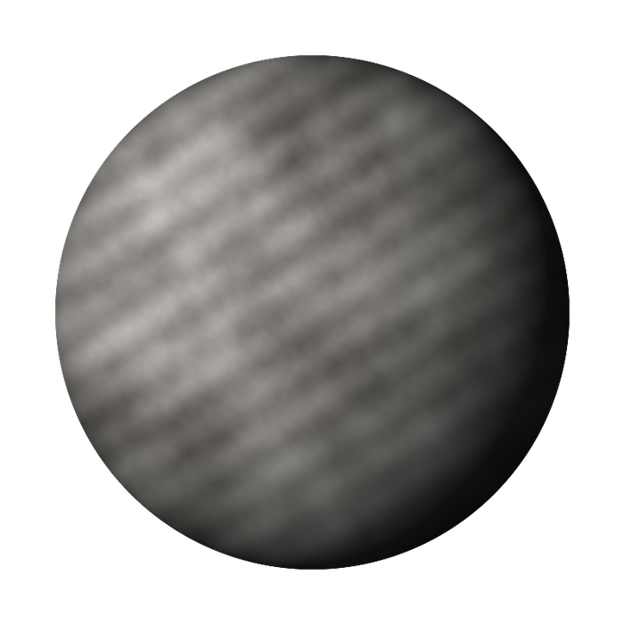
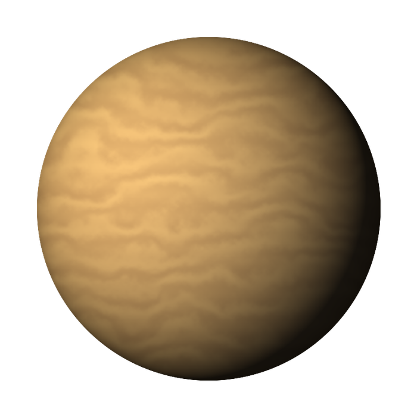
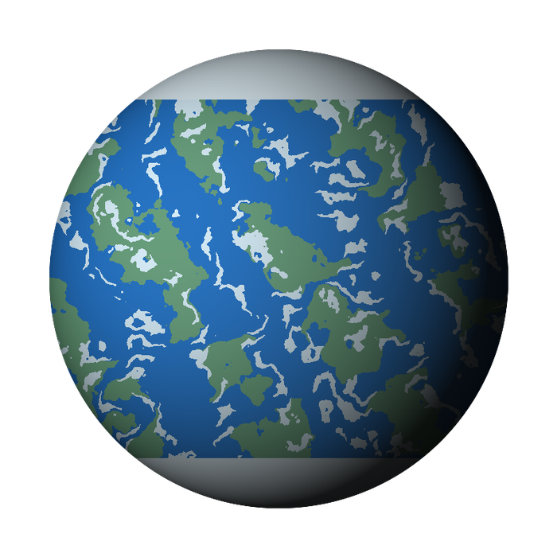
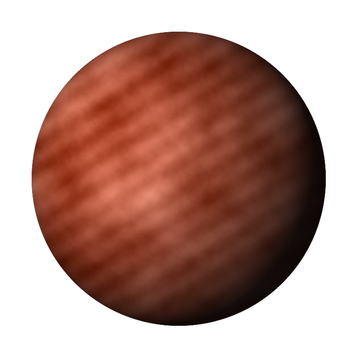
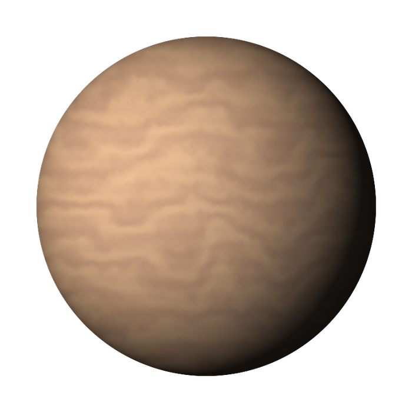
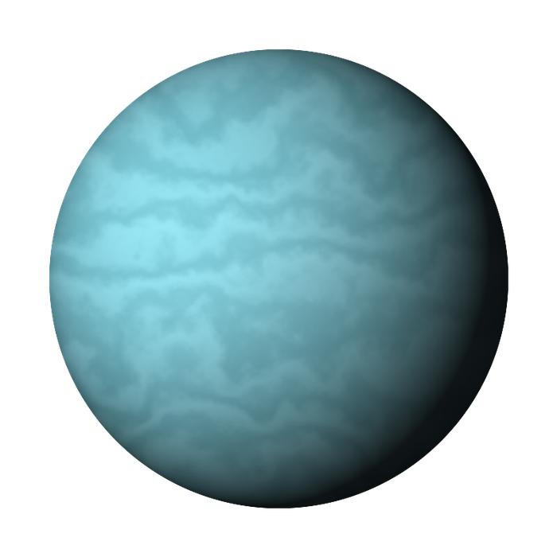
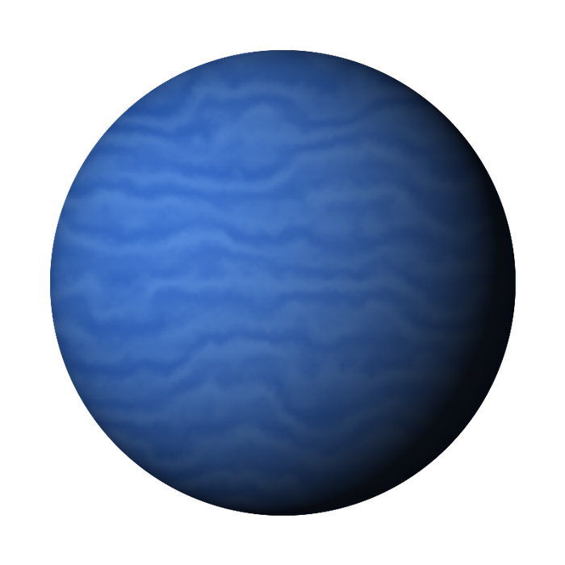

ROCHEUSE · TELLURIQUE
Mercure
La plus proche du Soleil, petite et rocheuse.
Révolution : 88 joursLE CATALOGUE
Filtre selon la famille de planète ou recherche un nom.

La plus proche du Soleil, petite et rocheuse.
Révolution : 88 jours
Une atmosphère dense et des températures extrêmes.
Révolution : 225 jours
Des océans liquides et une biosphère exceptionnelle.
Révolution : 365 jours
Un désert froid marqué par d’anciens cours d’eau.
Révolution : 687 jours
La plus grande planète, célèbre pour sa Grande Tache rouge.
Révolution : 11,9 ans
Une géante entourée d’anneaux composés surtout de glace.
Révolution : 29,4 ans
Une planète bleu pâle dont l’axe est très incliné.
Révolution : 84 ans
Un monde lointain, balayé par des vents puissants.
Révolution : 164,8 ansAucune planète ne correspond à ta recherche. Essaie un autre filtre.
COMPRENDRE EN UN COUP D’ŒIL
Observe la différence entre la durée d'une révolution et la distance moyenne au Soleil.
| Planète | Famille | Tour du Soleil | Distance au Soleil |
|---|---|---|---|
| Mercure | Tellurique | 88 jours | 0,39 UA |
| Vénus | Tellurique | 225 jours | 0,72 UA |
| Terre | Tellurique | 365 jours | 1 UA |
| Mars | Tellurique | 687 jours | 1,52 UA |
| Jupiter | Gazeuse | 11,9 ans | 5,2 UA |
| Saturne | Gazeuse | 29,4 ans | 9,58 UA |
| Uranus | Glacée | 84 ans | 19,2 UA |
| Neptune | Glacée | 164,8 ans | 30,1 UA |
Données arrondies à des fins pédagogiques. Référence : NASA Science / Planets ↗. Les visuels sont des illustrations, pas des photographies scientifiques.